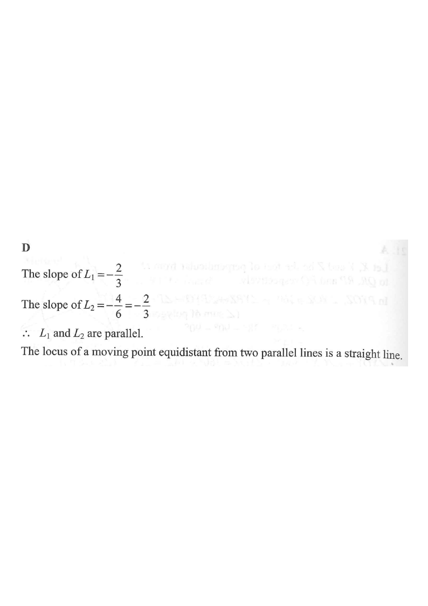

HKDSE 2014 · Paper 2 · Q24 — Locus of a point equidistant from two parallel lines
\(L_1: 2x+3y=5\)
\(L_2: 4x+6y=7\)
locus of \(P\)
point \(P\) & perpendicular feet
distances
[2014MC#24]
The equations of the straight lines \(L_1\) and \(L_2\) are
\[2x+3y=5 \quad\text{and}\quad 4x+6y=7\]
respectively. If \(P\) is a moving point in the rectangular coordinate plane such that
the perpendicular distance from \(P\) to \(L_1\) is equal to the perpendicular distance
from \(P\) to \(L_2\), then the locus of \(P\) is a
circle.
square.
parabola.
straight line.

Figure (original exam diagram)
STEP 1 · Compare the slopes of \(L_1\) and \(L_2\)
Condition for Parallel Lines\(m_{1}=m_{2}\)Both lines have slope \(-\dfrac{2}{3}\), while the intercepts \(\dfrac{5}{3}\) and \(\dfrac{7}{6}\) differ, so they are parallel and distinct.
Rewrite each line in slope-intercept form \(y=mx+c\).
For \(L_1\): \(3y=-2x+5 \Rightarrow y=-\dfrac{2}{3}x+\dfrac{5}{3}\), so \(m_1=-\dfrac{2}{3}\).
For \(L_2\): \(6y=-4x+7 \Rightarrow y=-\dfrac{4}{6}x+\dfrac{7}{6}=-\dfrac{2}{3}x+\dfrac{7}{6}\), so \(m_2=-\dfrac{2}{3}\).
Both lines share the same slope \(-\tfrac{2}{3}\), so they are parallel — and they are distinct since \(\tfrac{5}{3}\neq\tfrac{7}{6}\).
STEP 2 · Set up the equal-distance condition
Perpendicular Distance from a Point to a Line\(d=\dfrac{ax+by+c}{\sqrt{a^{2}+b^{2}}}\)It turns the condition "distance to \(L_{1}\) equals distance to \(L_{2}\)" into an equation in \(x\) and \(y\); squaring both sides is safe because a number and its opposite have the same square.
Let \(P=(x,y)\). The perpendicular distance from \(P\) to a line \(ax+by+c=0\) is
\(\dfrac{ax+by+c}{\sqrt{a^2+b^2}}\), read as a positive number: if the numerator is negative, use its opposite.
Write the lines in general form:
\(L_1: 2x+3y-5=0\) and \(L_2: 4x+6y-7=0\).
The condition "distance to \(L_1\) = distance to \(L_2\)" gives
The \(x\) and \(y\) coefficients are now identical on the two sides, so subtracting leaves a linear equation — a strong sign of a single straight-line locus.
STEP 4 · Solve the squared equation
Squaring Both Sides\(u^{2}=v^{2}\;\Longleftrightarrow\;u=v \text{ or } u=-v\)With \(u=4x+6y-10\) and \(v=4x+6y-7\), the first case is impossible and the second gives the mid-line.
Since \(u^2=v^2\) means \(u=v\) or \(u=-v\):
Case 1: \(4x+6y-10=4x+6y-7 \Rightarrow -10=-7\), impossible — no solutions.
So the locus is \(4x+6y=\dfrac{17}{2}\), a straight line exactly midway between the two parallel lines.
STEP 5 · Interpret the result and pick the option
The locus of a point equidistant from two parallel lines is a straight line parallel to them (the mid-line).
It is a line, not a circle, square or parabola: distance-to-line is a linear expression, not quadratic.
A parabola would arise from distance to a point = distance to a line; equal distances to two lines give one or two straight lines.
Answer: D · straight line — locus: \(4x+6y=\dfrac{17}{2}\)
PRACTICESimilar question — try it yourself
Question. The equations of the straight lines \(L_{1}\) and \(L_{2}\) are \(x+2y=3\) and \(3x+6y=10\). If \(P\) moves so that its perpendicular distance from \(L_{1}\) equals its perpendicular distance from \(L_{2}\), then the locus of \(P\) is
Show the worked solution
Step 1. Rewriting gives \(y=-\dfrac{1}{2}x+\dfrac{3}{2}\) and \(y=-\dfrac{1}{2}x+\dfrac{5}{3}\): the slopes are equal, so the two lines are parallel and distinct.
Step 2. Let \(P=(x,\ y)\). Equal distances give \(\dfrac{(x+2y-3)^{2}}{5}=\dfrac{(3x+6y-10)^{2}}{45}\).
Step 3. Since \(45=9\times5\), multiplying both sides by \(45\) gives \(9(x+2y-3)^{2}=(3x+6y-10)^{2}\), i.e. \((3x+6y-9)^{2}=(3x+6y-10)^{2}\).
Step 4. \(3x+6y-9=3x+6y-10\) would give \(-9=-10\), which is impossible; so \(3x+6y-9=-(3x+6y-10)\), giving \(6x+12y-19=0\), i.e. \(x+2y=\dfrac{19}{6}\).
Step 5. The locus is the mid-line between the two parallel lines, so it is a straight line (not a circle, square or parabola).